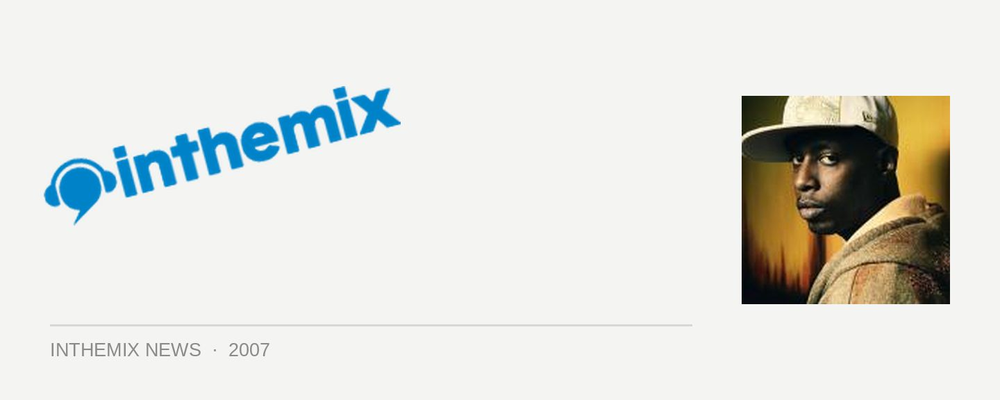

Talib Kweli tours with Scribe, presented by inthemix!
In news sure to excite hip hop lovers around the country, Talib Kweli and Scribe will be hitting our shores in October to co-headline shows in Melbourne, Perth, Adelaide, Sydney and Brisbane. The pair will both be performing material from their respective new albums.
Known more than anything else for his socially-conscious style of rapping, Talib Kweli has been on the radar since the late 1990s when he performed in Black Star along with Mos Def. He established himself as a powerful solo player with his debut album Reflection Eternal in 2000 and went on to secure his place as a music industry player with his own record label Blacksmith Music.
His new album Ear Drum again emphasises him as an alternative to all the generic gangsta rap doing the rounds and it’s first single Talk is already earning him acclaim: you can check it out in ITM-TV.
Supporting Kweli on the tour, New Zealand’s Scribe is one of hip hop’s biggest names from over this side of the world. His debut album The Crusader was the first Australasian hip hop release to sell over 180,000 copies across both New Zealand and Australia, spending over 75 weeks in the Aria Top 40 and scoring two gold singles. His follow up Rhymebook will be released in October with the first single F.R.E.S.H. already in circulation, check it out in ITM-TV!
If that wasn’t enough, supporting these two amazing wordsmiths will be experimental hip-hop duo DJ Zeph & Azeem, straight out of San Francisco. They’ve steadily been building a reputation as one of the most exciting underground hip hop acts in the US, and are currently gaining rotation on Triple J with their fusion of funk, soul, dub, dance hall, heavy percussion and of course, slamming hip hop.
Excited? Tickets on sale from inthemix on Thursday 6th September. It’s set to be one of the year’s best hip hop tours, presented by inthemix!
Sunday October 7th: The Forum, Melbourne
Wednesday October 10th: Metro City, Perth
Thursday October 11th: HQ, Adelaide
Friday October 12th: Enmore Theatre, Sydney
Saturday October 13th: The Arena, Brisbane